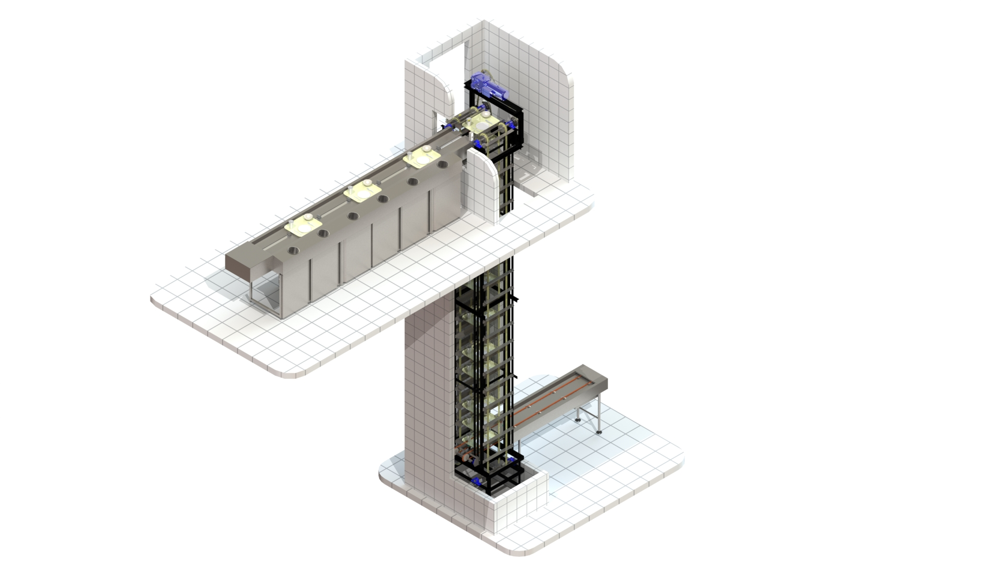
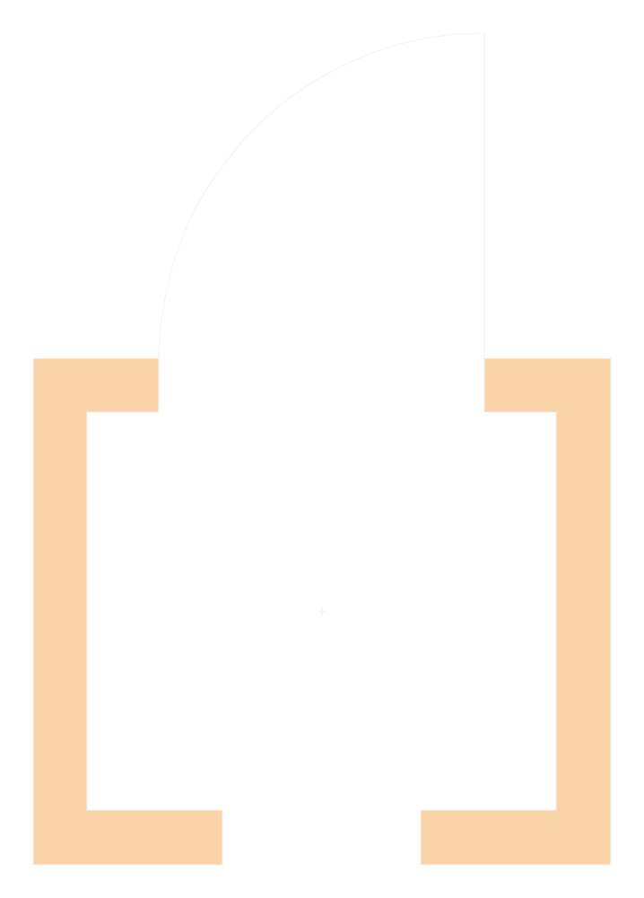

Technilift
Élévateurs / descenseurs de casiers et de plateaux entre étages.

Pour le transfert des plateaux ou des casiers d’un étage à l’autre, en liaison avec les convoyeurs linéaires, le descenseur / élévateur vertical Technilift est un dispositif particulièrement recommandé et très fiable.
Les dernières évolutions permettent de disposer d’un appareil au principe de fonctionnement très simple, avec toutes les sécurités nécessaires à une utilisation intensive, pour un minimum d’entretien.
L’alimentation est assurée par un transporteur à taquets pour garantir la synchronisation avec le Technilift. Le déchargement se fait en continuité, par dépose sur un transporteur à corde ou à palettes.
Source : Présentation « Environnement laverie mécanisé » (PDF Sopacom)
Seules les informations figurant dans les documentations Sopacom sont reprises. Les points demandés mais non documentés sont signalés « à confirmer ».
| Fonction | Transfert des plateaux ou casiers d’un étage à l’autre |
|---|---|
| Type | Descenseur / élévateur vertical |
| Liaison | Avec les convoyeurs linéaires |
| Synchronisation | Alimentation par transporteur à taquets |
| Déchargement | En continuité, sur transporteur à corde (Technicord) ou à palettes (Transflex) |
| Exploitation | Sécurités pour une utilisation intensive · minimum d’entretien |
| À confirmer | Hauteurs, charges et cadences : fiche Technilift détaillée non transmise (disponible sur le site actuel). |
Source : Présentation « Environnement laverie mécanisé » (PDF Sopacom)
Technilift en situation.


S’intégrer à l’ensemble de la laverie.
Transflex
Entrée ou sortie Technilift pour casiers.
Source : Fiche Transflex (PDF Sopacom)
En savoir plus →Technicord
Déchargement par dépose sur un transporteur à corde.
Source : Présentation « Environnement laverie mécanisé » (PDF Sopacom)
En savoir plus →Plusieurs niveaux
Liaison entre étages pour les laveries situées sur un autre niveau que la salle.
Source : Présentation « Environnement laverie mécanisé » (PDF Sopacom)
En savoir plus →16 blocs AutoCAD Technilift.
Extraits de la bibliothèque CAO Sopacom : chaque bloc est consultable en plan et téléchargeable au format DWG.

MPDMur avec porte à droite
MPGMur avec porte à gauche
MPFMur avec porte en face
DPDescenseur à plateaux - Dépose
DPLDescenseur à plateaux - Laverie
EDPDescenseur à plateaux
PEDPoutre entrée
PIDPoutre intermédiaire